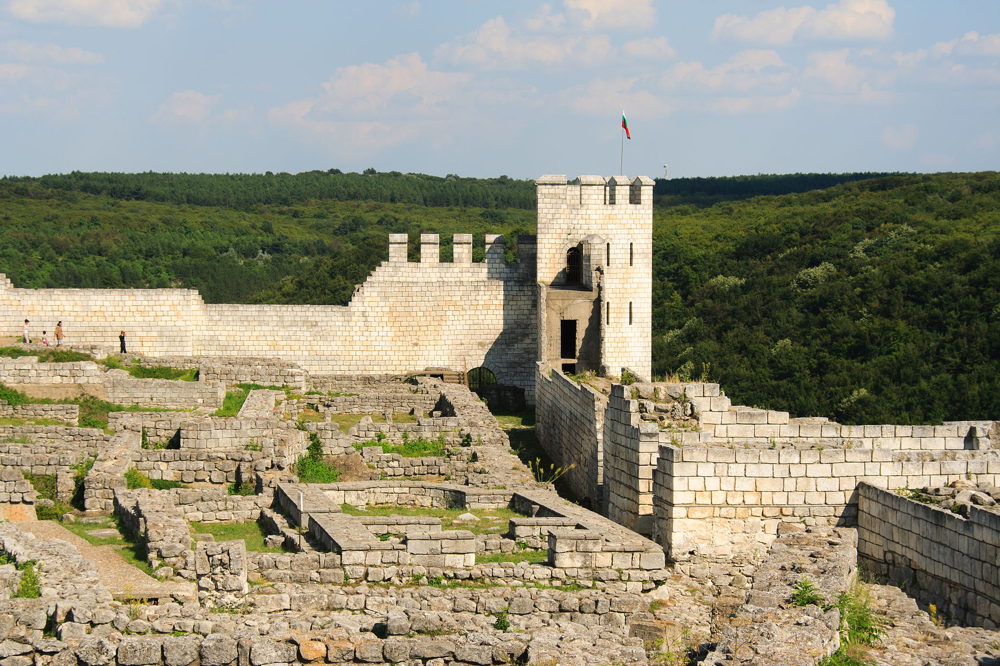
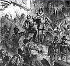

Welcome to Wikipedia,
the free encyclopedia that anyone can edit.5,149,118 articles in English
From today's featured article

British scientists were crucial to the success of the Manhattan Project, which developed the first atomic bombs during World War II. After Rudolf Peierls and Otto Frisch at the University of Birmingham calculated that a small sphere of pure uranium-235 could explode with the power of thousands of tons of dynamite, their memorandum led to Britain's own atomic bomb project. This project shared research with the US, but was eventually subsumed by the Manhattan Project under the 1943 Quebec Agreement. A British mission led by the Australian physicist Mark Oliphant assisted in the development of electromagnetic separation processes for enriching uranium; Wallace Akers led a similar mission assisting with gaseous diffusion. James Chadwick (pictured) was the head of a distinguished team of British scientists working on bomb design at the Los Alamos Laboratory that included Niels Bohr, Peierls, Frisch, Geoffrey Taylor, and James Tuck, as well as Klaus Fuchs, who was later revealed to be a Soviet atomic spy. American and British cooperation ended with the Atomic Energy Act of 1946. In October 1952, Britain became the third country to test an independently developed nuclear weapon. (Full article...)
Did you know...
- ... that the Shumen fortress (pictured) was destroyed in 1444 after the battle between Władysław III of Poland and the Ottomans?
- ... that less than two months after Rush kicked Marco Corleone out of Los Ingobernables, the two wrestlers were teamed up for the 2016 Torneo Nacional de Parejas Increíbles?
- ... that Gott ist mein König, BWV 71, is the only surviving church cantata by Bach to have been printed during his lifetime?
- ... that Delila Richards Abbott worked for a top secret government committee which advocated for policy changes for U.S. servicewomen in the 1960s?
In the news

- Werner Faymann (pictured) resigns as Chancellor of Austria and leader of the Social Democratic Party.
- In horse racing, Nyquist, ridden by Mario Gutierrez, wins the Kentucky Derby.
- Enda Kenny of Fine Gael is re-elected Taoiseach of Ireland and forms a minority coalition government.
- A wildfire in Canada displaces 88,000 people and destroys more than 2,400 buildings in Fort McMurray, Alberta.
On this day...
- 1588 – An apparently spontaneous public uprising (pictured) arose in staunchly Catholic Paris against the moderate policies of Henry III.
- 1846 – Led by George Donner, the American pioneer group known as the Donner Party, which became known for resorting to cannibalism when they became trapped in the Sierra Nevadas, left Independence, Missouri, for California.
- 1926 – The Trades Union Congress, a federation of British trade unions, announced that it would end its week-long general strike "in defence of [coal] miners' wages and hours".
- 1968 – The 1st Australian Task Force began the defence of Fire Support Base Coral in the largest unit-level action of the Vietnam War for the Australian Army.